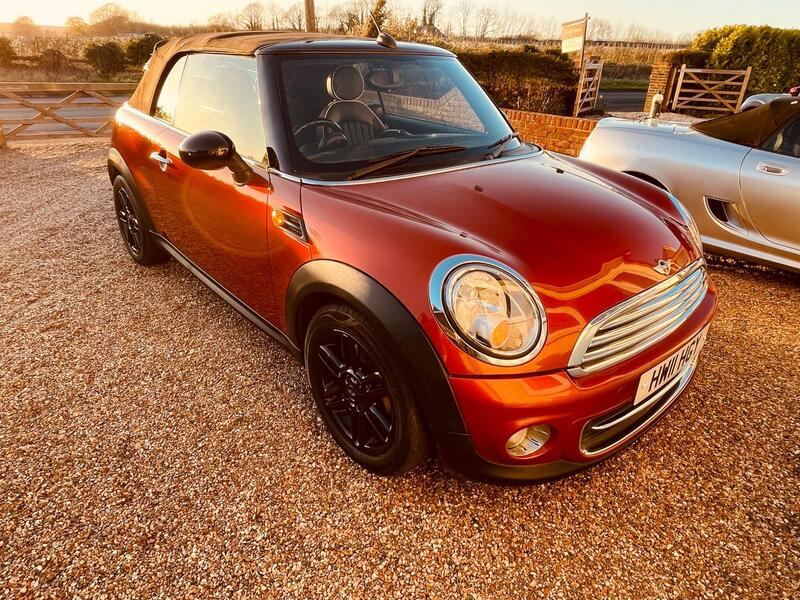
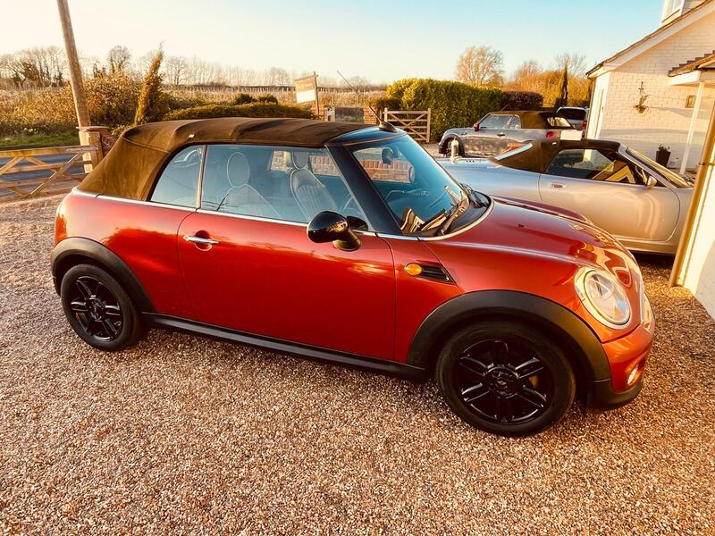
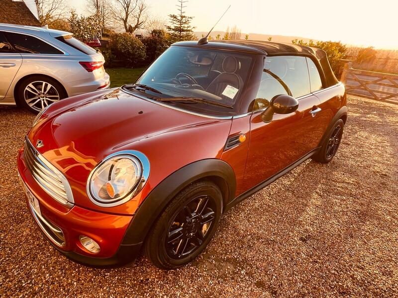
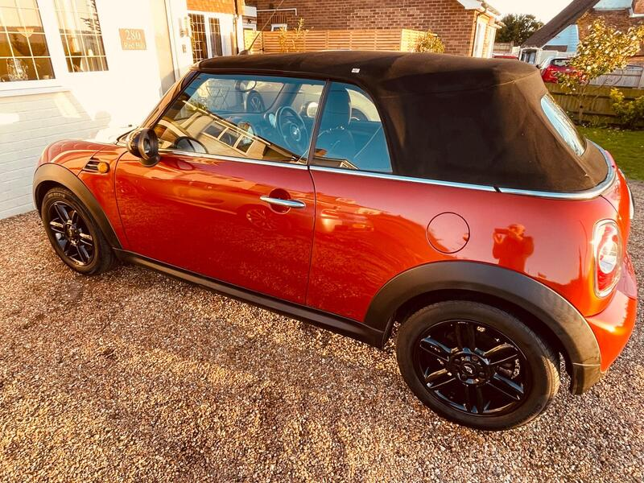

Seller photos from the AutoTrader ad.
MINI Convertible 1.6 Cooper
A well-loved private R57.
Key facts
| Price | £3,000 |
|---|---|
| Year | 2011 |
| Miles | 81,500 |
| Model | MINI Convertible 1.6 Cooper |
| Colour | Orange |
| Registration | 2011 (11 reg) |
| Owners | 4 owners |
| Service history | Not stated |
| MOT (AutoTrader ad) | 29 Jun 2027 (ad) |
| Seller | Trade |
| Location | Maidstone |
| From GU7 | 45 mi (AutoTrader) |
| Checked | 15 October 2026 |
Why buy it
- New water pump, good history, leather (ad)
- Private, family owned
Things to check
One key
No offers
- MINI Convertible R52/R57 weak spots
Not flagged as a major issue in our sources; check for water ingress via roof drains and seals. R52 CVT auto fails (avoid); supercharged R52 power-steering pump; pre-Nov 2011 Prince timing-chain tensioners; roof hydraulics £395–495 average repair, R57 roof from ~£1,735.
Seller says (extract)
“This is a private sale. Lovely mini, owned by us personally and our daughter, whose name is on the V5. Acquired from a local garage - West Malling Garage in 2022. Has been well looked after and serviced by them in our ownership. Recent new water pump. Wheels were professionally refurbished by us and we also put in a leather interior to replace the cloth seats, which really lifts this above the average. Also has wind deflector for when roof is down. Service history is good, paperwork available to review. One key. Usable all year around, super reliable and good fun. Be quick! No offers. Priced correctly.…”